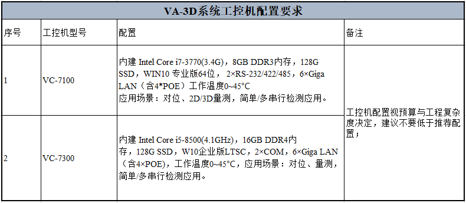
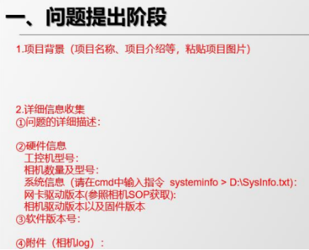

Toàn bộ chương về camera 3D áp dụng cho giai đoạn lắp đặt đầu tiên của dự án 3D và trong quá trình bảo trì dự án để kiểm tra, định vị và xử lý các vấn đề liên quan đến camera 3D.
Kiến thức liên quan đến camera 3D: Chủ yếu giới thiệu các dòng camera được VA hỗ trợ, thông số kỹ thuật, lựa chọn cấu hình,... nhằm giúp người sử dụng hiểu rõ hơn về camera 3D;
Lắp đặt và điều chỉnh camera 3D: Chủ yếu hướng dẫn các bước lắp đặt và điều chỉnh camera 3D; mục đích là giúp người dùng hoàn thành lắp đặt phần cứng và điều chỉnh hình ảnh camera;
Sự cố thường gặp với camera 3D: Chủ yếu giới thiệu các vấn đề thường gặp trong quá trình sử dụng và cách kiểm tra, xử lý;
Nhân viên dự án tại hiện trường (AE, chăm sóc khách hàng) hãy đọc kỹ các phần liên quan đến dự án của mình và trong giai đoạn đầu lắp đặt, hãy thao tác theo nội dung trong phần hai của tài liệu này để đảm bảo tuân thủ quy chuẩn.
Trong giai đoạn bảo trì dự án, nếu phát sinh vấn đề về camera, vui lòng kiểm tra và xử lý theo nội dung chương ba. Nguyên tắc là bộ phận R&D sẽ không tiếp nhận các vấn đề đã được ghi rõ trong tài liệu này. Nếu gặp vấn đề chưa được nêu trong tài liệu hoặc các hướng dẫn có điểm chưa phù hợp hoặc sai sót, vui lòng xử lý theo mục “Phản hồi vấn đề” sau đây.
Cấu hình tối thiểu yêu cầu đối với máy công nghiệp sử dụng trong các dự án 3D như sau:

Tài liệu này chủ yếu tiếp nhận các phản hồi thuộc các trường hợp sau:
Nội dung trong chương này chưa đầy đủ hoặc giải pháp không hiệu quả;
Vấn đề mới về camera, mẫu phản hồi như hình sau:
